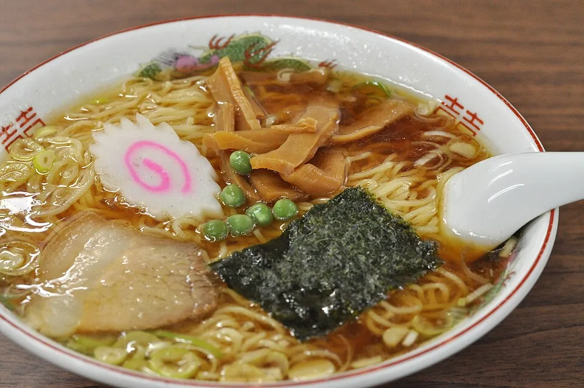
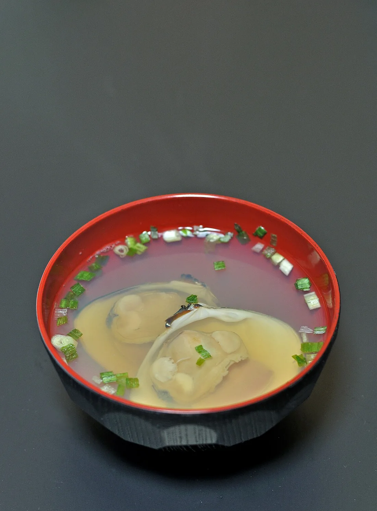

蛤ラーメン
丼いっぱいの蛤を、澄んだ貝出汁で。
丼いっぱいに盛られた蛤と、蛤の旨みが溶け込んだ澄んだ貝出汁。麺はしなやかとの声があります。
貝が苦手な方は、ほかの一杯から選べます。

断面 ─ 一杯を上から辿る
蛤ラーメンの一杯を、上から順に辿ります。水面から底まで、四つの層で。
丼いっぱいに盛られた蛤。丼を前にして、まず目を引くのはその存在感です。
蛤本気ラーメンの口コミには、蛤が大きく食べ応えがあるとの声も。この一杯の入口を、静かに飾ります。
蛤の旨みが溶け込んだ、澄んだ貝出汁。口いっぱいに広がる旨みに、スープを飲み干したくなるとの声があります。
貝出汁系は珍しいとの声もあり、あっさりしつつ満足感があるとの声もあります。
麺は、主役であるスープを邪魔しない、しなやかな食感との声があります。
蛤本気ラーメンをいただいた人からは、スープと麺のバランスがよいという感想も。
蛤スープにご飯を浸して食べる楽しみ方が、声として挙がっています。
柔らかく煮込んだ豚肉の豚しぐれ飯や、皮つるりで餡ジューシーなワンタンの追加も、底までのお供に。
貝が苦手な方には、別の一杯もあります。
一杯ずつを見る初めてでも迷わないように、口コミで挙がっている流れをまとめました。
荒天の日でも、午前中から並ぶ人がいるとの声があります。人気のため、時間帯によっては待つこともあるようです。
駐車場は台数に限りがあり、時間帯によって満車のことがあるとの声があります。最新の情報は、Googleマップ・Instagramでご確認ください。
お席は多くなく、目安として着席5席・待ち席5席との声があります。順番が来たら、着席します。
着席して注文するときに、現金で前払いとの声があります。現金をご用意しておくと安心です。
まずは、名物の蛤ラーメンを。貝が苦手な方は、ほかの一杯を選ぶこともできます。
※口コミ・来店者の声をもとにした目安です。運用は変わることがあります。
Googleマップの複数の口コミより(要旨)
「蛤の旨みが溶け込んだ澄んだ味わいで、貝出汁が口いっぱいに広がる。思わずスープを飲み干したくなる。」
「見た目の印象以上に旨みがあり、スープと麺のバランスもよい。蛤は大きく、食べ応えがある。」
蛤スープにご飯を浸して食べる楽しみ方が挙がっているほか、追加したワンタンは皮がつるりとして餡もジューシー、との声も。
Googleマップ評価4.2(口コミ375件)
一部の写真はフリー素材のイメージです。実際の店内・お料理の写真は貴店ご提供のものに差し替えます